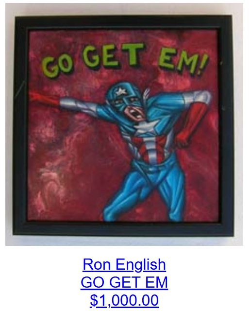

Exhibitions
POPaganda / Rejected II, 313 Gallery, New York, New York, US, February 1–26, 1999.

Ron English, Mark Mothersbaugh & Daniel Johnston: 3 Man Art Exhibition, Copro/Nason Gallery, Santa Monica, California, US, September 17–October 15, 2005.
Provenance
Artist's personal collection.
Notes
Collaborative work by Ron English and Daniel Johnston.
This work appears on Copro/Nason’s page for Ron English, Daniel Johnston, Mark Mothersbaugh.
Ancillary Documentation
The following materials document Captain America source material and the work’s appearance on Copro/Nason’s exhibition page.

